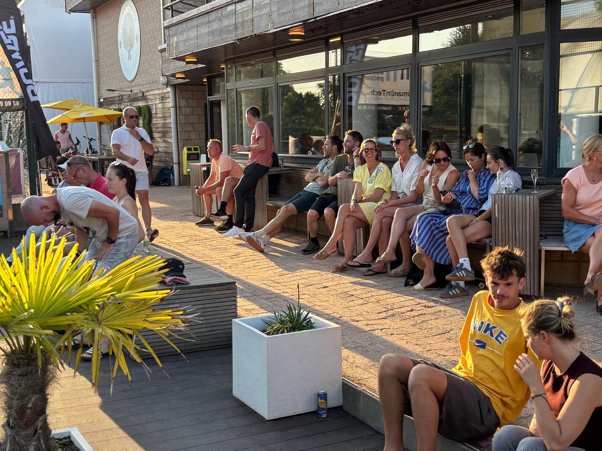

Sport én clubleven
Of je nu recreatief speelt, competitie speelt of voor het eerst een racket vastneemt: we willen een plek zijn waar leden zich thuis voelen.
Onze club combineert sportieve uitdagingen met gezellige momenten naast het terrein.
Onze infrastructuur
De club heeft tennis- en padelterreinen, een terras en overdekte speelmogelijkheden volgens de bestaande clubinformatie. Raadpleeg de reservatieomgeving voor actuele beschikbaarheid.
Ontdek tennis & padel